Learning how to use fusion 360
The first leson we had on Computer Aided Design, was learning how to use fusion 360.We were first taught the basics of fusion 360 on how to create a sketch and constrain. After that we were task to create a nametag.
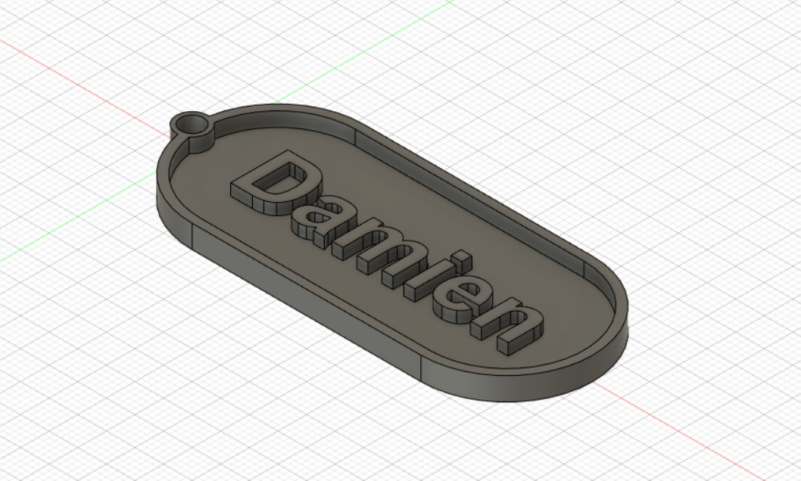After learning the basics we progress to more advance designs like, lego,Hex nut and chest piece.
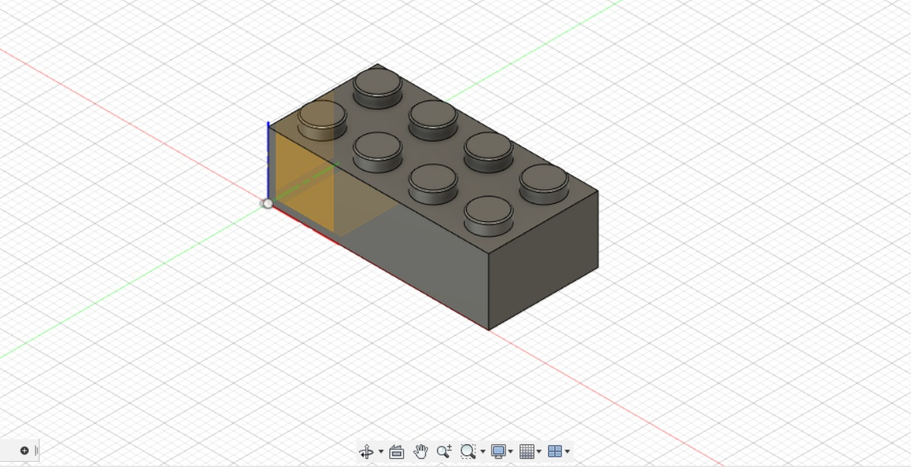 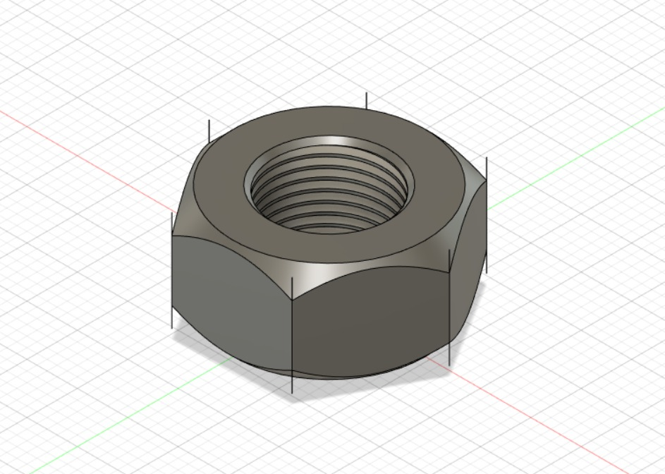 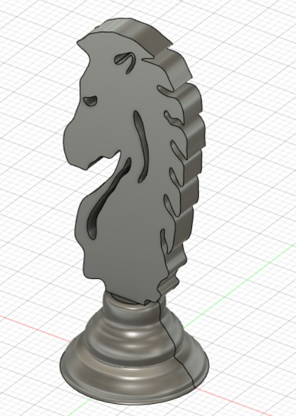We were tasked to create a design that can only be 3d printed. The reason why we use 3d printing is to create shapes that are too complex to be machine by conventional methods. Another benefit of 3d printing is its accessiblity and convenience, which allow user to design the anything on the go, so long as they have accesss to a working computer. I name my design "impossible ball". The reason being that there is a ball traped inside a mini cage. It would be very difficult to machine, due to the ball being hard t reach.
Gimp
The next lesson we had on Computer Aided Design was Gimp. we learn how to replace the back ground image of our selfie. First we had to select the parts ourself that we want in the new background ,by using the free select tool. Next we chose the new background that we want and import it as a new layer.Lastly we then combine the 2 image together.
Inkscape
The last lesson we had on Computer Aided Design was Inkscape. we learn how to create an image in to vector. First open a picture that you want to convert in to vector.Next select path>Trace Bitmap.Lastly, play around with the function till you get your desire vector image. The function i selected was multiple scan>colour>scan(8)>select remove background and stack>Apply.
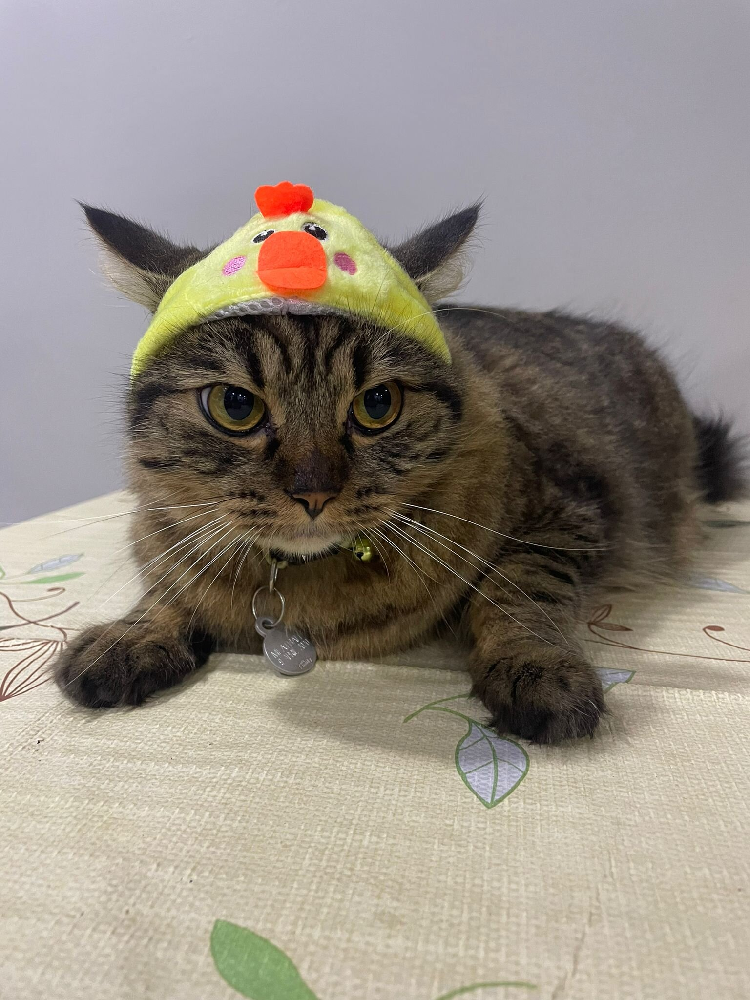 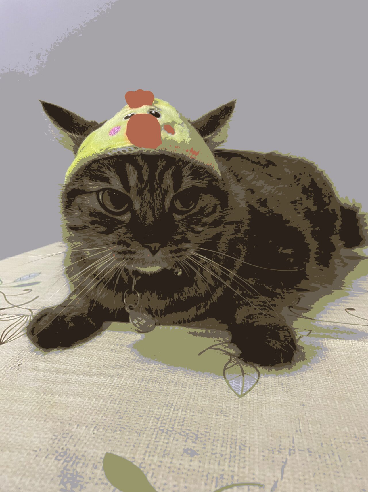Laser cutting
The first assignment we were task to do using fusion 360 was to create a music box with a lid. I first started with a simple sketch of the music box to help me visualise better.Then i added in the dimensions and the amount of tabs.This made it easier to fill in the parameter, and prevent any typo error.When creating the music box, i found out many comands that made the whole process faster. The comands are parameters, combine,rectangle pattern, mirror and insert.
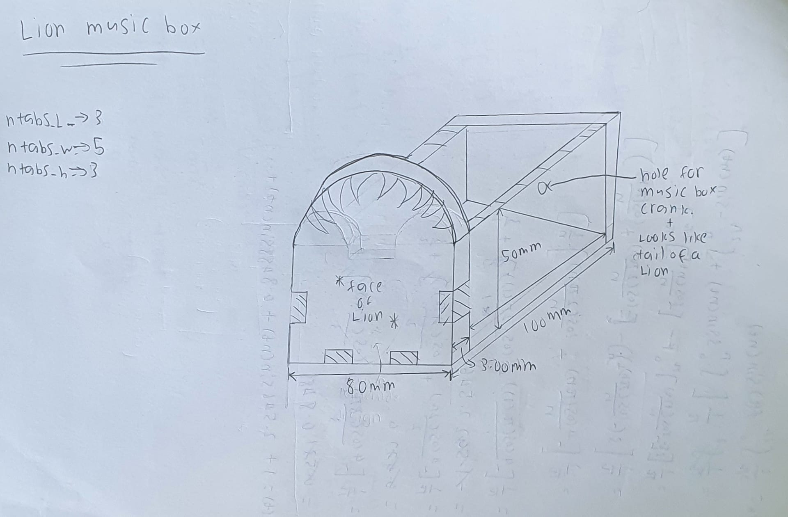Instead of going into every sketch and change the dimension one by one, parameter allow me to give the dimesion a variable, so instead of typing out the dimension, i will just indicate the variable.
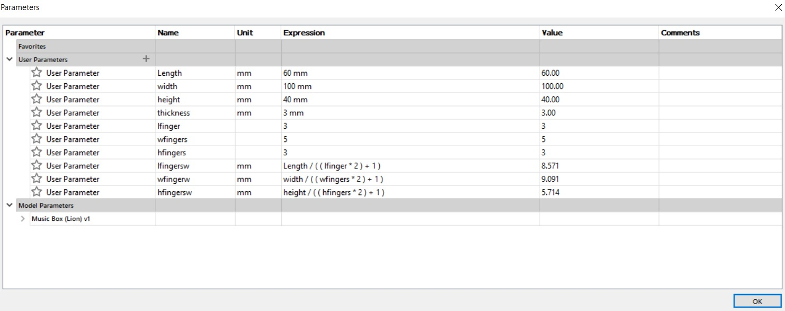I used combine and rectangle pattern comand for creating the tabs that connects the pieces together. First i create a sketch of the tab that i want to create. I would then extrude and use rectangular pattern to get multiple of the extrude feature on the selected side. After that i would create another surface on the same plane as the tabs, and use the combine comand to create exactly where the tabs would be on the new surface.
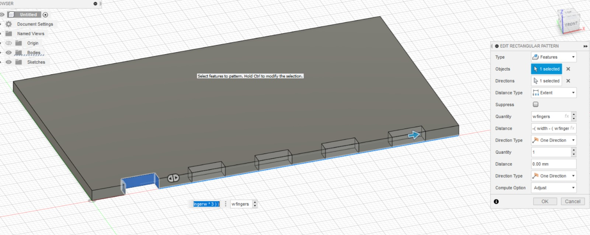 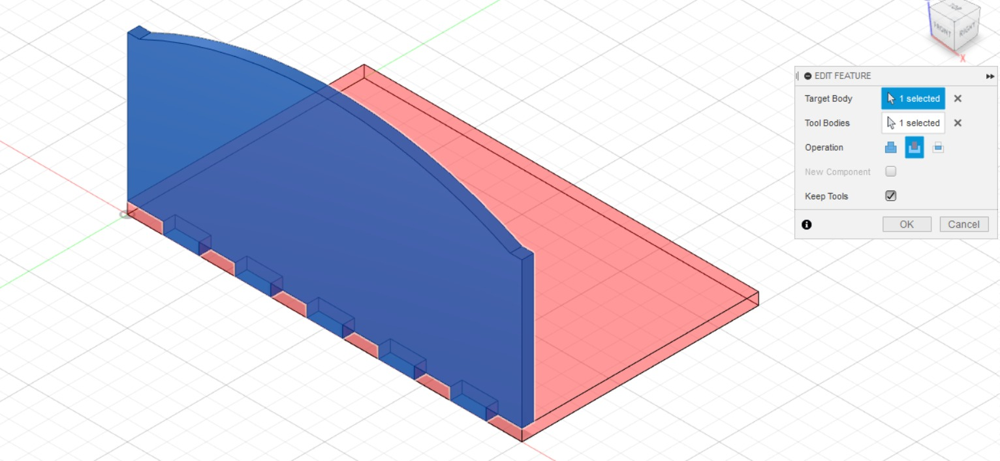Once i have finished one side of the music box, i would use mirror comand to create a symetrical side on the other side, this saved me the trouble of having to repeat what i dis for that surface and prevent me from making mistakes.
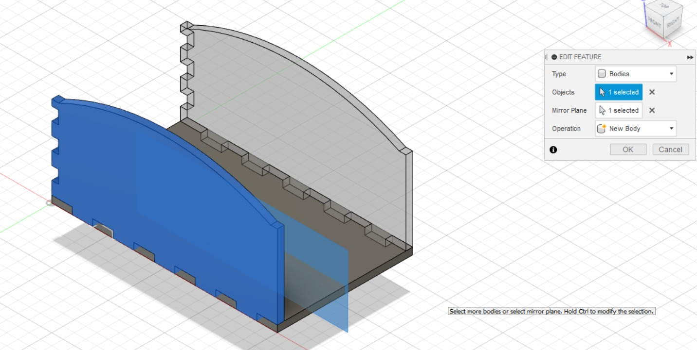For the lion head i used insert comand to bring in a lion head image that i found on google. I used spline comand to trace out the lion head, and use extrude comand to cut it to create an engrave look.This process took me the longest as i have to trace out the lion' head in detail.
For the creation of my website, I use visual studio as my main coding page.The language i use in visual studio are html and css. Both html and css work hand in hand to create the website you see here. Html is use to code the content of the website, like the header, discription and the navigation bar, while css is use to style your website by, organizing the content, include image and add background colour.
With the aid of a coding website call "W3school" and tutoral videos from jake wright, we were able to different code from the website W3school, which greatly helped us with the formating of our webite. For every segment of the website, we have to create an individual html file and also a css file to link with it.To link the 2 files, we use the code "< link rel="stylesheet" type="text/css" href="Style4.css" />" at the start.
To show an example of the codes i use in html, i decided to use the html code for my DOCUMENT segment.
- < h> is use to type out the header of the segment, or the header for the individual points in the segment
- < p> is use to add in content after the header, to elaborate the header
- < img> is use to include images. If you saved all you image into an image folder, you have to add in extra comand like folder name/image name
- "width" and "height" is use control the size of the images.
- < body> is use to contain all the contents of an HTML document, such as headings, paragraphs, images, hyperlinks, tables, lists, etc.
- < a href=> is to include a link to either a website or another segment in the website
To show an example of the codes i use in css, i decided to use the html code for my DOCUMENT segment.
- color is use to give either the background or the text a certain color.
- font-size is use to control the font size
- text-align is used to align the sentence to 3 position, left,centre,right
- padding defines the innermost portion of the box model, creating space around an element's content, inside of any defined margins and/or borders.
We use github to upload our html code online, for people to see. Once we upload it into github, it will create a link for our website. Github also allow public user to look at the code that is use to create the website, which is good for coders to learn.
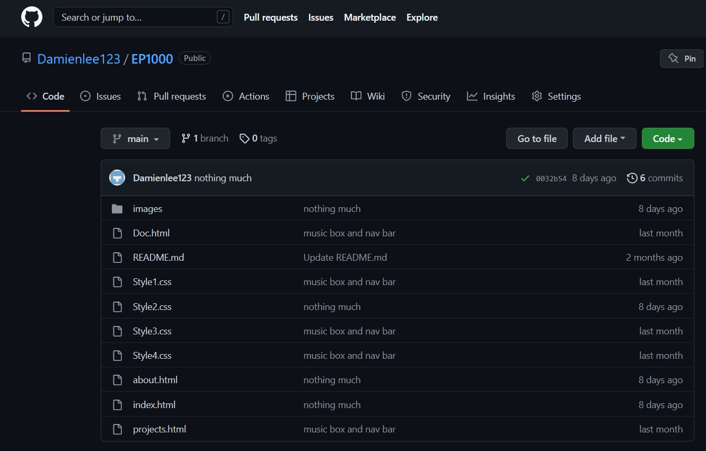We use github desktop to upload all the changes we made in the code. With a few simple steps, we are able to replace the old code with a new code.
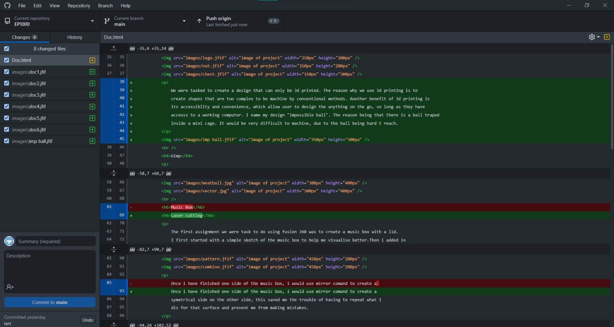